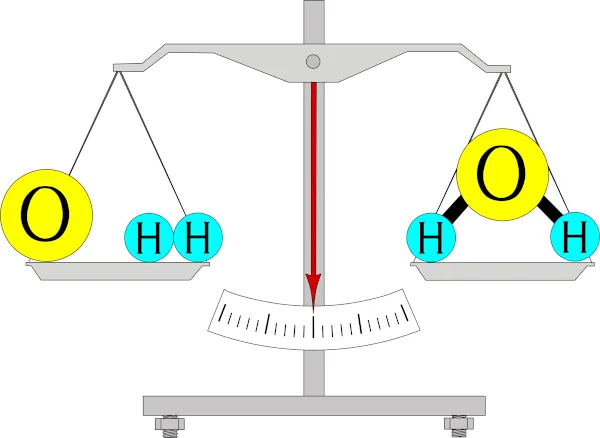
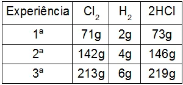
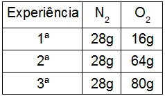

1 LEIS PONDERAIS
São generalizações definidas com base no estudo das relações entre as massas das substâncias de uma reação química. Uma reação química é representada por meio de uma equação na qual temos os reagentes, que são as substâncias que promovem a reação, e os produtos, que são o resultado dessa reação. As leis ponderais são três, a de Lavoisier, a de Proust e a de Dalton (DIAS, 2023).
1.1 LEI DA CONSERVAÇÃO DA MASSA DE LAVOISIER
Criada por Antoine Laurent Lavoisier no final do século XVIII, essa lei é muito conhecida pela frase “ Na natureza nada se cria, nada se perde, tudo se transforma” (LAVOISIER). Considerado o pai da química moderna, Lavoisier realizou inúmeros experimentos químicos em sistemas fechados, quando não há troca de matéria entre os meios. Nesses experimentos ele constatou que as substâncias combinadas durante uma reação e as substâncias geradas pela reação sempre apresentam a mesma massa. Ou seja, a massa dos produtos em um sistema fechado é igual a massa dos produtos.Veja o exemplo da figura 1 onde os dois lados da balança estão equilibrados. O lado esquerdo representa os reagentes e o direito os produtos (DIAS, 2023).
Figura 1 - A massa dos reagentes é igual a massa dos produtos
Fonte: Mundo Educação, 2023
1.2 LEI DAS PROPORÇÕES DEFINIDAS DE PROUST
Proposta em 1800 pelo químico e farmacêutico francês Joseph Louis Proust. Ele constatou que os elementos que participam de uma definida substância pura sempre apresentam uma proporção em massa. Assim, ele afirmava que a composição química de uma substância é sempre a mesma, independente de como foi formada. Um exemplo para entender como funciona essa lei é a produção de ácido clorídrico(HCl) a partir do gás cloro(Cl2) e do gás hidrogênio(H2). Em um primeiro experimento usamos 71 gramas de Cl2, com duas gramas de H2, gerando 73 gramas de HCl. No segundo experimento dobramos esse número e no terceiro multiplicamos ele por três (DIAS, 2023).
Tabela 1 - Experiência da lei das proporções constantes
Fonte: Brasil Escola, 2023
De acordo com a lei das proporções constantes, quando dividimos as massas dos reagentes de cada experimento, notamos que a proporção do ácido clorídrico é sempre 2 para 71 (DIAS, 2023).
1.3 LEI DAS PROPORÇÕES MÚLTIPLAS DE DALTON
Proposta pelo químico inglês John Dalton em 1803. Segundo Dalton, quando combinamos um elemento de mesma massa com outro de massa diferente, em uma reação química, o resultado é a formação de substâncias diferentes, mas a divisão das diferentes massas resulta em números inteiros e pequenos (DIAS, 2023).
Tabela 2 - Experiência da lei das proporções múltiplas
Fonte: Brasil Escola, 2023
Como exemplo desta lei vamos usar a formação de óxidos do elemento nitrogênio, que tem como formação o gás nitrogênio (N2) e o gás oxigênio(O2). Para isso, devemos manter constante a massa do nitrogênio e variar a massa do oxigênio. Se variarmos a massa do oxigênio e deixarmos a do nitrogênio constante em três ocasioẽs e dividirmos ou a segundo ou a terceira variação de massa pela primeira vamos encontrar a variação dos átomos de oxigênio.No exemplo acima houve uma variação de 1 oxigênio para 4 entre a 1a e a 2a experiência e uma variação de 1 oxigênio para 5 entre a 1a e a 3a experiência (DIAS, 2023).
REFERÊNCIAS
DIAS, Diogo. Leis ponderais. Brasil escola. Disponível em https://brasilescola.uol.com.br/quimica/leis-ponderaislei-conservacao-das-massas.htm. Acesso em: 5 abr. 2023 .
BATISTA, Carolina. Leis ponderais. Mundo educação. Disponível em https://mundoeducacao.uol.com.br/quimica/lei-lavoisier.htm.Acesso em: 5 abr. 2023 .